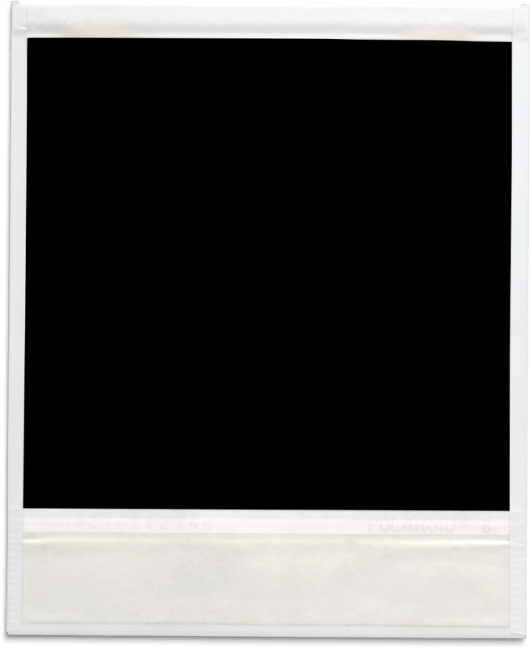

happy birthday
happy birthday
happy birthday

Photo placeholder
Hello, Olivia!
you are invited to have a fun celebration at
Avery’s birthday party
29.01.2030
Start at 9 pm
123 Anywhere St., Any City
dresscode: chic retro
One more thing
RSVP
Let us know if you’ll be celebrating with Avery!
Yay!
Can’t wait to celebrate with you!